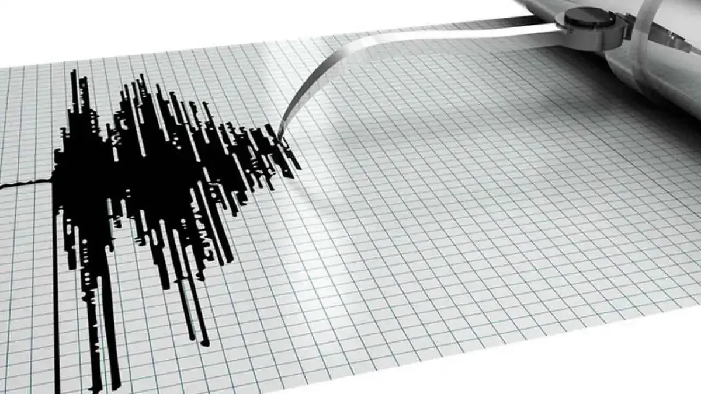

Dirasakan Warga Sukabumi, BMKG: Gempa Laut M5.9 Akibat Deformasi Batuan
Oksa Bachtiar Camsyah
Rabu 03 Januari 2024, 09:34 WIB
(Foto Ilustrasi) BMKG menyatakan berdasarkan hasil analisis mekanisme sumber, gempa ini memiliki mekanisme pergerakan geser-naik (oblique thrust). | Foto: Pixabay
SUKABUMIUPDATE.com - BMKG menyatakan gempa tektonik
5.9 magnitudo pada
Rabu (3/1/2024) pukul
07.53.49 WIB memiliki parameter update magnitudo 5.7. Episenter gempa terletak pada
koordinat 7,57° LS ; 106,17° BT, atau berlokasi di laut pada jarak 77 kilometer arah barat
daya Sukabumi, Jawa Barat, pada kedalaman 63 kilometer.
Data itu memperbarui laporan sebelumnya yang menyebut guncangan berpusat di laut, 72
kilometer barat daya Bayah, Kabupaten Lebak, Banten, dengan kedalaman 74 kilometer.
Memerhatikan lokasi episenter dan kedalaman hiposenter, gempa yang terjadi merupakan
gempa
bumi kedalaman menengah akibat adanya deformasi batuan dalam Lempeng Indo-Australia yang
tersubduksi ke bawah Lempeng Eurasia. Hasil analisis mekanisme sumber menunjukkan gempa ini
memiliki mekanisme pergerakan geser-naik (oblique thrust).
Gempa berdampak dan dirasakan di Surade (Kabupaten Sukabumi) dengan skala intensitas IV
MMI (bila pada siang hari dirasakan orang banyak dalam rumah). Selanjutnya di Palabuhanratu
(Kabupaten Sukabumi), Cianjur, Panggarangan, Lebak, Garut, skala intensitas III MMI (getaran
dirasakan nyata dalam rumah. Terasa seakan truk berlalu).
Peta guncangan gempa 5.9 magnitudo pada Rabu (3/1/2024) pukul 07.53.49 WIB. | Foto: BMKG
Lalu di Lembang, Bandung Barat, Cimahi, skala intensitas II-III MMI (getaran dirasakan nyata
dalam rumah. Terasa seakan truk berlalu). Kemudian di daerah Tangerang Selatan, skala intensitas
II MMI (getaran dirasakan beberapa orang, benda-benda ringan yang digantung bergoyang). Hasil
pemodelan menunjukkan gempa tidak berpotensi tsunami.
Hingga pukul 08.30 WIB, hasil monitoring BMKG belum menunjukkan adanya
aktivitas gempa bumi
susulan (aftershock). Masyarakat diimbau agar tetap tenang dan tidak terpengaruh oleh isu yang
tidak dapat dipertanggungjawabkan kebenarannya. Selain itu, hindari pula bangunan retak atau
rusak yang diakibatkan oleh gempa.
Periksa dan pastikan bangunan tempat tinggal Anda cukup tahan gempa atau tidak ada
kerusakan akibat getaran gempa yang membahayakan kestabilan bangunan sebelum Anda kembali ke
dalam rumah. Pastikan informasi resmi hanya bersumber dari BMKG yang disebarkan melalui kanal
komunikasi resmi yang telah terverifikasi.
Sebelumnya diberitakan, warga Sukabumi merasakan gempa ini. Joe (18 tahun), karyawan di
Kecamatan Warudoyong, Kota Sukabumi, mengatakan gempa terjadi sekitar lima detik. Sementara di
Desa Kutasirna, Kecamatan Cisaat, Kabupaten Sukabumi, warga bernama Ira Amelia (26 tahun),
mengaku guncangan terasa saat sedang di kamar. Hal serupa dirasakan warga Pajampangan, Kabupaten
Sukabumi.
Tags :
Berita Terkait
SUKABUMI
Warga Sukabumi Rasakan Gempa Bayah M5.9, Dampak Langsung Dipantau
Rabu 03 Januari 2024, 08:43 WIB

NASIONAL
Gempa M5,9 Guncang Bayah Banten, BMKG: Tidak Berpotensi Tsunami
Rabu 03 Januari 2024, 08:08 WIB

INTERNASIONAL
Gempa Jepang M7,4 Tewaskan 48 Orang, Kemlu Pastikan Tak Ada WNI Jadi Korban
Selasa 02 Januari 2024, 18:49 WIB

JAWA BARAT
Gempa M4,4 Kedalaman 10Km Guncang Sumedang, Getarannya hingga 3 MMI
Senin 01 Januari 2024, 21:17 WIB

INTERNASIONAL
Perkiraan Tinggi Gelombang Capai 5 Meter, Peringatan Tsunami Gempa M7,4 Jepang
Senin 01 Januari 2024, 16:53 WIB

Berita Terkini
SUKABUMI
Warga Sukabumi Rasakan Gempa Bayah M5.9, Dampak Langsung Dipantau
Rabu 03 Januari 2024, 08:43 WIB
NASIONAL
Gempa M5,9 Guncang Bayah Banten, BMKG: Tidak Berpotensi Tsunami
Rabu 03 Januari 2024, 08:08 WIB
INTERNASIONAL
Gempa Jepang M7,4 Tewaskan 48 Orang, Kemlu Pastikan Tak Ada WNI Jadi Korban
Selasa 02 Januari 2024, 18:49 WIB
JAWA BARAT
Gempa M4,4 Kedalaman 10Km Guncang Sumedang, Getarannya hingga 3 MMI
Senin 01 Januari 2024, 21:17 WIB
INTERNASIONAL
Perkiraan Tinggi Gelombang Capai 5 Meter, Peringatan Tsunami Gempa M7,4 Jepang
Senin 01 Januari 2024, 16:53 WIB